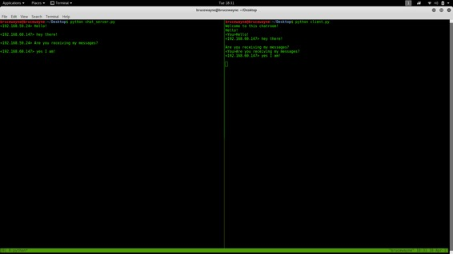

This article demonstrates – How to set up a simple Chat Room server and allow multiple clients to connect to it using a client-side script. The code uses the concept of sockets and threading.
Socket programming
Sockets can be thought of as endpoints in a communication channel that is bi-directional, and establishes communication between a server and one or more clients. Here, we set up a socket on each end and allow a client to interact with other clients via the server. The socket on the server side associates itself with some hardware port on the server side. Any client that has a socket associated with the same port can communicate with the server socket.
Multi-Threading
A thread is sub process that runs a set of commands individually of any other thread. So, every time a user connects to the server, a separate thread is created for that user and communication from server to client takes place along individual threads based on socket objects created for the sake of identity of each client.
We will require two scripts to establish this chat room. One to keep the serving running, and another that every client should run in order to connect to the server.
Server Side Script
The server side script will attempt to establish a socket and bind it to an IP address and port specified by the user (windows users might have to make an exception for the specified port number in their firewall settings, or can rather use a port that is already open). The script will then stay open and receive connection requests, and will append respective socket objects to a list to keep track of active connections. Every time a user connects,
a separate thread will be created for that user. In each thread, the server awaits a message, and sends that message to other users currently on the chat. If the server encounters an error while trying to receive a message from a particular thread, it will exit that thread.
Usage
This server can be set up on a local area network by choosing any on computer to be a server node, and using that computer’s private IP address as the server IP address.
For example, if a local area network has a set of private IP addresses assigned ranging from 192.168.1.2 to 192.168.1.100, then any computer from these 99 nodes can act as a server, and the remaining nodes may connect to the server node by using the server’s private IP address. Care must be taken to choose a port that is currently not in usage. For example, port 22 is default for ssh, and port 80 is default for HTTP protocols. So these two ports preferably, shouldnt be used or reconfigured to make them free for usage.
However, if the server is meant to be accessible beyond a local network, the public IP address would be required for usage. This would require port forwarding in cases where a node from a local network (node that isnt the router) wishes to host the server. In this case, we would require any requests that come to the public IP addresses to be re routed towards our private IP address in our local network, and would hence require port forwarding.
For more reading on port forwarding: link
To run the script, simply download it from the GitHub link specified at the bottom of the post, and save it at a convenient location on your computer.
/* Both the server and client script can then be run from the Command prompt (in Windows) or from bash Terminal (Linux users) by simply typing "python chat_server.py " or "python client.py ". For example, */ python chat_server.py 192.168.55.13 8081 python client.py 192.168.55.13 8081
Below is the Server side script that must be run at all times to keep the chatroom running.
# Python program to implement server side of chat room.
import socket
import select
import sys
from thread import *
"""The first argument AF_INET is the address domain of the
socket. This is used when we have an Internet Domain with
any two hosts The second argument is the type of socket.
SOCK_STREAM means that data or characters are read in
a continuous flow."""
server = socket.socket(socket.AF_INET, socket.SOCK_STREAM)
server.setsockopt(socket.SOL_SOCKET, socket.SO_REUSEADDR, 1)
# checks whether sufficient arguments have been provided
if len(sys.argv) != 3:
print "Correct usage: script, IP address, port number"
exit()
# takes the first argument from command prompt as IP address
IP_address = str(sys.argv[1])
# takes second argument from command prompt as port number
Port = int(sys.argv[2])
"""
binds the server to an entered IP address and at the
specified port number.
The client must be aware of these parameters
"""
server.bind((IP_address, Port))
"""
listens for 100 active connections. This number can be
increased as per convenience.
"""
server.listen(100)
list_of_clients = []
def clientthread(conn, addr):
# sends a message to the client whose user object is conn
conn.send("Welcome to this chatroom!")
while True:
try:
message = conn.recv(2048)
if message:
"""prints the message and address of the
user who just sent the message on the server
terminal"""
print "<" + addr[0] + "> " + message
# Calls broadcast function to send message to all
message_to_send = "<" + addr[0] + "> " + message
broadcast(message_to_send, conn)
else:
"""message may have no content if the connection
is broken, in this case we remove the connection"""
remove(conn)
except:
continue
"""Using the below function, we broadcast the message to all
clients who's object is not the same as the one sending
the message """
def broadcast(message, connection):
for clients in list_of_clients:
if clients!=connection:
try:
clients.send(message)
except:
clients.close()
# if the link is broken, we remove the client
remove(clients)
"""The following function simply removes the object
from the list that was created at the beginning of
the program"""
def remove(connection):
if connection in list_of_clients:
list_of_clients.remove(connection)
while True:
"""Accepts a connection request and stores two parameters,
conn which is a socket object for that user, and addr
which contains the IP address of the client that just
connected"""
conn, addr = server.accept()
"""Maintains a list of clients for ease of broadcasting
a message to all available people in the chatroom"""
list_of_clients.append(conn)
# prints the address of the user that just connected
print addr[0] + " connected"
# creates and individual thread for every user
# that connects
start_new_thread(clientthread,(conn,addr))
conn.close()
server.close()
Client Side Script
The client side script will simply attempt to access the server socket created at the specified IP address and port. Once it connects, it will continuously check as to whether the input comes from the server or from the client, and accordingly redirects output. If the input is from the server, it displays the message on the terminal. If the input is from the user, it sends the message that the users enters to the server for it to be broadcasted to other users.
This is the client side script, that each user must use in order to connect to the server.
# Python program to implement client side of chat room.
import socket
import select
import sys
server = socket.socket(socket.AF_INET, socket.SOCK_STREAM)
if len(sys.argv) != 3:
print "Correct usage: script, IP address, port number"
exit()
IP_address = str(sys.argv[1])
Port = int(sys.argv[2])
server.connect((IP_address, Port))
while True:
# maintains a list of possible input streams
sockets_list = [sys.stdin, server]
""" There are two possible input situations. Either the
user wants to give manual input to send to other people,
or the server is sending a message to be printed on the
screen. Select returns from sockets_list, the stream that
is reader for input. So for example, if the server wants
to send a message, then the if condition will hold true
below.If the user wants to send a message, the else
condition will evaluate as true"""
read_sockets,write_socket, error_socket = select.select(sockets_list,[],[])
for socks in read_sockets:
if socks == server:
message = socks.recv(2048)
print message
else:
message = sys.stdin.readline()
server.send(message)
sys.stdout.write("<You>")
sys.stdout.write(message)
sys.stdout.flush()
server.close()
Output: In the picture given below, a server has been initialized on the left side of the terminal and a client script on the right side of the terminal. (Splitting of terminal done using tmux, ‘sudo apt-get install tmux’). For initialization purposes, you can see that whenever a message is sent by a user, the message along with IP address is shown on the server side.

{kind=link}
The below picture has a basic conversation between two people on the same server. Multiple clients can connect to the server in the same way!
Link to download script: link